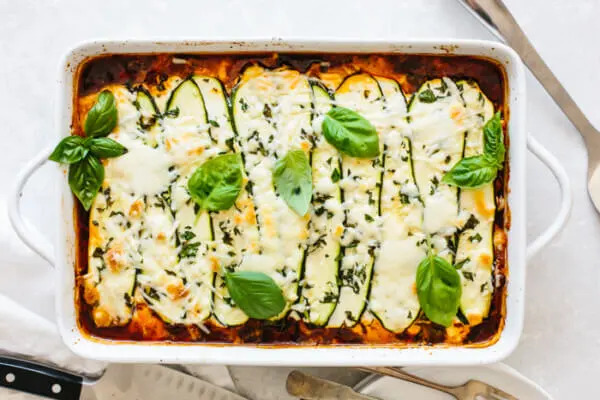

Mama's Lovely Zucchini Lasagna.

Zucchini Lasagna is a fresh, new take on a comfort dish loved by many across the world.
While different from the usual Pasta bake, the dish still thrives with fantastic flavours, brought together with healthier ingredients and a more veggie-conscious take on the classic meal.
The star of the show, the Zucchini, is such a versatile vegetable, capable of fitting into almost anything that a dish requires, such as Noodles or Bread. It's so fitting, you'll barely even notice it's there! It'll taste just like Mama used to make.
Ingredients:
- 4 Large Zucchini
- 2lbs Ground Beef
- 24oz Pasta Sauce
- 15oz Ricotta Cheese, 1 cup Shredded Parmesan & 1/2cup Mozzarella
- 1 Egg
- Salt and Pepper (to taste)
- Small handful of Fresh Parsley and Basil
Steps:
- Slice zucchini. Preheat the oven to 400°F (200°C). Slice the zucchini lengthwise into thin slices, as thin or thick as you'd like. Set aside.
- Make bolognese. Add the ground beef to a large pan over medium-high heat. Finely break down the ground beef with a spatula and pan-fry until browned and no longer pink. Then, pour the pasta sauce on top (remember to reserve 1/2 cup) and stir together, then remove from heat.
- Make ricotta mix. In a medium bowl, make the ricotta mix by stirring together the ricotta cheese, parmesan, egg, salt and pepper.
- Add the first layers. Spread 1/2 cup of pasta sauce onto the bottom of your 9×13-inch casserole dish. Then add your zucchini slices on top of the pasta sauce. They can overlap or you can place them side-by-side.
- Add the secondary layers. Top the zucchini with 1/2 of the bolognese sauce, and evenly spread 1/2 the ricotta mix on top of that. Then, add 1/2 cup of grated mozzarella with a sprinkle of chopped parsley and basil.
- Repeat these layers one more time.
- Finish the topping. Top the lasagna with a final layer of zucchini slices, a sprinkle of chopped parsley and basil, and 1/2 cup of mozzarella cheese.
- Bake. Place the lasagna in the oven and cook for 40 to 45 minutes. Broil for a couple of minutes to get a nice golden top. Garnish with whole basil leaves and serve.
Congrats!
You did it! You successfully made my Mama's Lovely Zucchini Lasagna! I'm sure it'll taste great, thanks to your capable hands and my handy step-by-step guide, after all. Enjoy!
Back to Home?
Click Here!